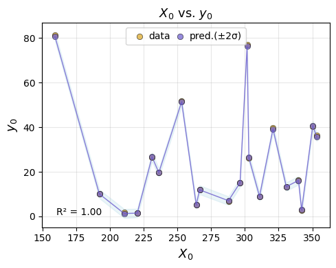

Integrating a user-provided simulator in an end-to-end AutoEmulate workflow#
Overview#
In this workflow we demonstrate the integration of a Cardiovascular simulator, Naghavi Model from ModularCirc in the end-to-end AutoEmulate workflow.
Naghavi model is a 0D (zero-dimensional) computational model of the cardiovascular system, which is used to simulate blood flow and pressure dynamics in the heart and blood vessels.
This demo includes:
Setting up parameter ranges
Creating samples
Running the simulator to generate training data for the emulator
Using AutoEmulate to find the best pre-processing technique and model tailored to the simulation data
Applying history matching to refine the model and enhance parameter ranges
Sensitivity Analysis

Additional dependency requirements#
In this demonstration we are using the Naghavi Model Simulator from ModularCirc library. Therefore, the user needs to install the ModularCirc library in their existing AutoEmulate virtual environemnt as an additional dependency.
! pip install git+https://github.com/alan-turing-institute/ModularCirc.git@dev
Workflow#
1 - Create a dictionary called parameters_range which contains the name of the simulator input parameters and their range.#
from autoemulate.simulations.naghavi_cardiac_ModularCirc import extract_parameter_ranges
# Usage example:
parameters_range = extract_parameter_ranges('../data/naghavi_model_parameters.json')
parameters_range
{'ao.r': (120.0, 360.0),
'ao.c': (0.15, 0.44999999999999996),
'art.r': (562.5, 1687.5),
'art.c': (1.5, 4.5),
'ven.r': (4.5, 13.5),
'ven.c': (66.65, 199.95000000000002),
'av.r': (3.0, 9.0),
'mv.r': (2.05, 6.1499999999999995),
'la.E_pas': (0.22, 0.66),
'la.E_act': (0.225, 0.675),
'la.v_ref': (5.0, 15.0),
'la.k_pas': (0.01665, 0.07500000000000001),
'lv.E_pas': (0.5, 1.5),
'lv.E_act': (1.5, 4.5),
'lv.v_ref': (5.0, 15.0),
'lv.k_pas': (0.00999, 0.045)}
2 - Use LatinHypercube method from AutoEmulate to generate initial samples using the parameters range.#
import pandas as pd
import numpy as np
from autoemulate.experimental_design import LatinHypercube
# Generate Latin Hypercube samples
N_samples = 100
lhd = LatinHypercube(list(parameters_range.values()))
sample_array = lhd.sample(N_samples)
sample_df = pd.DataFrame(sample_array, columns=parameters_range.keys())
print("Number of parameters:", sample_df.shape[1], "Number of samples from each parameter:", sample_df.shape[0])
sample_df.head()
Number of parameters: 16 Number of samples from each parameter: 100
| ao.r | ao.c | art.r | art.c | ven.r | ven.c | av.r | mv.r | la.E_pas | la.E_act | la.v_ref | la.k_pas | lv.E_pas | lv.E_act | lv.v_ref | lv.k_pas | |
|---|---|---|---|---|---|---|---|---|---|---|---|---|---|---|---|---|
| 0 | 296.440885 | 0.396672 | 1015.055683 | 1.988679 | 6.507542 | 167.642001 | 5.485211 | 3.162309 | 0.233027 | 0.326324 | 12.565421 | 0.022142 | 1.443565 | 3.103660 | 7.226351 | 0.025244 |
| 1 | 170.936176 | 0.430408 | 810.882333 | 2.385469 | 10.865371 | 147.729601 | 5.217009 | 5.843980 | 0.254431 | 0.435555 | 14.803089 | 0.035664 | 0.854612 | 2.958498 | 8.912569 | 0.039591 |
| 2 | 224.910382 | 0.215161 | 1669.192723 | 1.551490 | 10.593887 | 88.536086 | 4.763047 | 3.939957 | 0.516216 | 0.304267 | 6.212975 | 0.020790 | 1.461334 | 4.461589 | 8.717625 | 0.031072 |
| 3 | 315.206213 | 0.151029 | 1201.130539 | 3.547849 | 6.280902 | 139.960518 | 4.016971 | 5.931769 | 0.629961 | 0.387896 | 14.515793 | 0.048657 | 1.499412 | 3.940640 | 14.773632 | 0.010744 |
| 4 | 220.269324 | 0.387451 | 933.723349 | 3.972825 | 5.981294 | 165.658227 | 6.785018 | 3.791956 | 0.381240 | 0.458787 | 11.295892 | 0.064039 | 0.929570 | 3.532311 | 9.808989 | 0.010605 |
3 - Wrap your Simulator in the AutoEmulate Simulator Base Class.#

from autoemulate.simulations.naghavi_cardiac_ModularCirc import NaghaviSimulator
# Initialize simulator with specific outputs
simulator = NaghaviSimulator(
parameters_range=parameters_range,
output_variables=['lv.P_i', 'lv.P_o'], # Only the ones you're interested in
n_cycles=300,
dt=0.001,
)
4 - Run the simulator using run_batch_simulations to obtain data for training AutoEmulate.#
# Run batch simulations with the samples generated in Cell 1
results = simulator.run_batch_simulations(sample_df)
# Convert results to DataFrame for analysis
results_df = pd.DataFrame(results)
Successfully completed 100/100 simulations (100.0%)
results_df
| 0 | 1 | 2 | 3 | 4 | 5 | 6 | 7 | |
|---|---|---|---|---|---|---|---|---|
| 0 | 15.168249 | 20.161629 | 18.472553 | 4.993380 | 15.168249 | 20.161629 | 18.472553 | 4.993380 |
| 1 | 36.019994 | 39.135503 | 37.573478 | 3.115509 | 36.019994 | 39.135503 | 37.573478 | 3.115509 |
| 2 | 26.756008 | 26.886811 | 26.814212 | 0.130803 | 26.756008 | 26.886811 | 26.814212 | 0.130803 |
| 3 | 2.411396 | 7.086565 | 5.246729 | 4.675169 | 2.411396 | 7.086565 | 5.246729 | 4.675169 |
| 4 | 1.594468 | 5.884158 | 4.283615 | 4.289690 | 1.594468 | 5.884158 | 4.283615 | 4.289690 |
| ... | ... | ... | ... | ... | ... | ... | ... | ... |
| 95 | 4.781580 | 15.237328 | 13.694896 | 10.455748 | 4.781580 | 15.237328 | 13.694896 | 10.455748 |
| 96 | 11.317115 | 20.156449 | 18.979320 | 8.839334 | 11.317115 | 20.156449 | 18.979320 | 8.839334 |
| 97 | 18.666848 | 23.334430 | 21.667915 | 4.667582 | 18.666848 | 23.334430 | 21.667915 | 4.667582 |
| 98 | 12.985272 | 24.617342 | 23.214435 | 11.632069 | 12.985272 | 24.617342 | 23.214435 | 11.632069 |
| 99 | 9.713965 | 15.335051 | 14.554911 | 5.621086 | 9.713965 | 15.335051 | 14.554911 | 5.621086 |
100 rows × 8 columns
Note that the first 4 steps can be replaced by having stored the output of your simulation in a file and then reading them in to a dataframe. However the purpose of this article is to demonstrate the use of a User-provided simulator in an end-to-end workflow.
simulator.output_names
['lv.P_i_min',
'lv.P_i_max',
'lv.P_i_mean',
'lv.P_i_range',
'lv.P_o_min',
'lv.P_o_max',
'lv.P_o_mean',
'lv.P_o_range']
Test your simulator with our test function to make sure it is compatible with AutoEmulate pipeline (Feature not provided yet).
# this should be replaced with a test written specically to test the simulator written by the user
# ! pytest ../../tests/test_base_simulator.py
5 - Setup AutoEmulate.#
User should choose from the available target
pre-processingmethods the methods they would like to investigate.User should choose from the available
modelsthemodelsthey would like to investigate.Setup AutoEmulate
import numpy as np
from autoemulate.compare import AutoEmulate
from autoemulate.plotting import _predict_with_optional_std
preprocessing_methods = [{"name" : "PCA", "params" : {"reduced_dim": 2}}]
em = AutoEmulate()
em.setup(sample_df, results, models=["gp"], scale_output = True, reduce_dim_output=True, preprocessing_methods=preprocessing_methods)
AutoEmulate is set up with the following settings:
| Values | |
|---|---|
| Simulation input shape (X) | (100, 16) |
| Simulation output shape (y) | (100, 8) |
| Proportion of data for testing (test_set_size) | 0.2 |
| Scale input data (scale) | True |
| Scaler (scaler) | StandardScaler |
| Scale output data (scale_output) | True |
| Scaler output (scaler_output) | StandardScaler |
| Do hyperparameter search (param_search) | False |
| Reduce input dimensionality (reduce_dim) | False |
| Reduce output dimensionality (reduce_dim_output) | True |
| Dimensionality output reduction methods (dim_reducer_output) | PCA |
| Cross validator (cross_validator) | KFold |
| Parallel jobs (n_jobs) | 1 |
6 - Run compare to train AutoEmulate and extract the best model.#
best_model = em.compare()
7 - Examine the summary of cross-validation.#
em.summarise_cv()
| preprocessing | model | short | fold | rmse | r2 | |
|---|---|---|---|---|---|---|
| 0 | PCA | GaussianProcess | gp | 4 | 1.640022 | 0.916621 |
| 1 | PCA | GaussianProcess | gp | 2 | 3.126992 | 0.874326 |
| 2 | PCA | GaussianProcess | gp | 0 | 2.790274 | 0.864704 |
| 3 | PCA | GaussianProcess | gp | 3 | 3.622270 | 0.846636 |
| 4 | PCA | GaussianProcess | gp | 1 | 2.794191 | 0.774314 |
best_model
InputOutputPipeline(regressor=Pipeline(steps=[('scaler', StandardScaler()),
('model', GaussianProcess())]),
transformer=Pipeline(steps=[('scaler_output',
StandardScaler()),
('dim_reducer_output',
PCA(n_components=2))]))In a Jupyter environment, please rerun this cell to show the HTML representation or trust the notebook. On GitHub, the HTML representation is unable to render, please try loading this page with nbviewer.org.
InputOutputPipeline(regressor=Pipeline(steps=[('scaler', StandardScaler()),
('model', GaussianProcess())]),
transformer=Pipeline(steps=[('scaler_output',
StandardScaler()),
('dim_reducer_output',
PCA(n_components=2))]))Pipeline(steps=[('scaler', StandardScaler()), ('model', GaussianProcess())])StandardScaler()
GaussianProcess()
Pipeline(steps=[('scaler_output', StandardScaler()),
('dim_reducer_output', PCA(n_components=2))])StandardScaler()
PCA(n_components=2)
8 - Extract the desired model, run evaluation and refit using the whole dataset.#
You can use the
best_modelselected by AutoEmulateor you can extract the model and pre-processing technique displayed in
em.summarise_cv()
gp = em.get_model('GaussianProcess')
em.evaluate(gp)
# for best model change the line above to:
# em.evaluate(best_model)
| model | short | preprocessing | rmse | r2 | |
|---|---|---|---|---|---|
| 0 | GaussianProcess | gp | PCA | 3.9183 | 0.7697 |
gp_final = em.refit(gp)
gp_final
InputOutputPipeline(regressor=Pipeline(steps=[('scaler', StandardScaler()),
('model', GaussianProcess())]),
transformer=Pipeline(steps=[('scaler_output',
StandardScaler()),
('dim_reducer_output',
PCA(n_components=2))]))In a Jupyter environment, please rerun this cell to show the HTML representation or trust the notebook. On GitHub, the HTML representation is unable to render, please try loading this page with nbviewer.org.
InputOutputPipeline(regressor=Pipeline(steps=[('scaler', StandardScaler()),
('model', GaussianProcess())]),
transformer=Pipeline(steps=[('scaler_output',
StandardScaler()),
('dim_reducer_output',
PCA(n_components=2))]))Pipeline(steps=[('scaler', StandardScaler()), ('model', GaussianProcess())])StandardScaler()
GaussianProcess()
Pipeline(steps=[('scaler_output', StandardScaler()),
('dim_reducer_output', PCA(n_components=2))])StandardScaler()
PCA(n_components=2)
em.plot_eval(gp_final)
9 - History Matching#
Once you have the final model, running history matching can improve your model. The Implausibility metric is calculated using the following relation for each set of parameter:
\(I_i(\overline{x_0}) = \frac{|z_i - \mathbb{E}(f_i(\overline{x_0}))|}{\sqrt{\text{Var}[z_i - \mathbb{E}(f_i(\overline{x_0}))]}}\) Where if implosibility (\(I_i\)) exceeds a threshhold value, the points will be rulled out. The outcome of history matching are the NORY (Not Ruled Out Yet) and RO (Ruled Out) points.
create a dictionary of your observations, this should match the output names of your simulator
create the history matching object
run history matching
from autoemulate.history_matching import HistoryMatching
# Define observed data with means and variances
observations = {
'lv.P_i_min': (5.0, 0.1), # Minimum of minimum LV pressure
'lv.P_i_max': (20.0, 0.1), # Maximum of minimum LV pressure
'lv.P_i_mean': (10.0, 0.1), # Mean of minimum LV pressure
'lv.P_i_range': (15.0, 0.5), # Range of minimum LV pressure
'lv.P_o_min': (1.0, 0.1), # Minimum of maximum LV pressure
'lv.P_o_max': (13.0, 0.1), # Maximum of maximum LV pressure
'lv.P_o_mean': (12.0, 0.1), # Mean of maximum LV pressure
'lv.P_o_range': (20.0, 0.5) # Range of maximum LV pressure
}
# Create history matcher
hm = HistoryMatching(
simulator=simulator,
observations=observations,
threshold=3.0
)
# Run history matching
all_samples, all_impl_scores, emulator = hm.run(
n_waves=20,
n_samples_per_wave=20,
emulator_predict=True,
initial_emulator=gp_final,
)
History Matching: 100%|██████████| 20/20 [00:00<00:00, 21.60wave/s, samples=20, failed=0, NROY=20, min_impl=0.12, max_impl=2.90]
em.plot_eval(emulator)

10 - use the interactive dashboard to inspect the results of history matching#
from autoemulate.history_matching_dashboard import HistoryMatchingDashboard
dashboard = HistoryMatchingDashboard(
samples=all_samples,
impl_scores=all_impl_scores,
param_names=simulator.param_names,
output_names=simulator.output_names,
)
dashboard.display()

11 - Sensitivity Analysis#
Use AutoEmulate to perform sensitivity analysis.
# Extract parameter names and bounds from the dictionary
parameter_names = list(parameters_range.keys())
parameter_bounds = list(parameters_range.values())
# Define the problem dictionary for Sobol sensitivity analysis
problem = {
'num_vars': len(parameter_names),
'names': parameter_names,
'bounds': parameter_bounds
}
si = em.sensitivity_analysis(problem=problem)
si
| output | parameter | index | value | confidence | |
|---|---|---|---|---|---|
| 0 | y1 | ao.r | S1 | 0.000054 | 0.000009 |
| 1 | y1 | ao.c | S1 | 0.000197 | 0.000032 |
| 2 | y1 | art.r | S1 | 0.000349 | 0.000040 |
| 3 | y1 | art.c | S1 | 0.000073 | 0.000011 |
| 4 | y1 | ven.r | S1 | 0.000271 | 0.000060 |
| ... | ... | ... | ... | ... | ... |
| 115 | y8 | (lv.E_pas, lv.v_ref) | S2 | -0.004675 | 0.050165 |
| 116 | y8 | (lv.E_pas, lv.k_pas) | S2 | 0.098837 | 0.057726 |
| 117 | y8 | (lv.E_act, lv.v_ref) | S2 | 0.005969 | 0.018428 |
| 118 | y8 | (lv.E_act, lv.k_pas) | S2 | 0.001894 | 0.022177 |
| 119 | y8 | (lv.v_ref, lv.k_pas) | S2 | 0.002823 | 0.018446 |
1216 rows × 5 columns
Footnote: Testing the dashboard#
Sometimes it is hard to know, if the results we are seeing is because the code is not working, or our simulation results are more interesting than we expected. Here is a little test dataset which tests the dashboard, so that you can see how the plots are supposed to look liek and what they shouldf show
# Create a test sample with KNOWN NROY regions
test_samples = np.array([[x, y] for x in np.linspace(0,1,100)
for y in np.linspace(0,1,100)])
test_scores = (abs(test_samples[:, 0]-0.5)+abs(test_samples[:, 1]-0.5)).reshape(-1, 1)
# Should show a clear diagonal pattern
test_dash = HistoryMatchingDashboard(
samples=test_samples,
impl_scores=test_scores,
param_names=["p1", "p2"],
output_names=["out1"],
threshold=0.7 # ~50% of points should be NROY
)
test_dash.display()